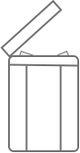

Tutorial
Meny
: meny för att spara- skapa dokument, sök bland dokument
Titlar
: hittar du alla dina tidigare sparade dokument.
Vertyg
: Här kan du modifiera texten byta teckensnitt, öka på storlek, bestämma dokuments format.
Jag förstår